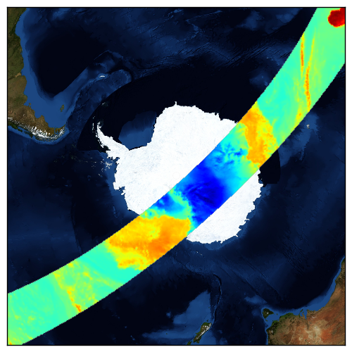

Plotting with pyresample and Basemap¶
Pyresample supports basic integration with Basemap (http://matplotlib.sourceforge.net/basemap/doc/html/).
Displaying data quickly¶
Pyresample has some convenience functions for displaying data from a single channel. The function plot.show_quicklook shows a Basemap image of a dataset for a specified AreaDefinition. The function plot.save_quicklook saves the Basemap image directly to file.
Example usage:
>>> import numpy as np
>>> import pyresample as pr
>>> lons = np.zeros(1000)
>>> lats = np.arange(-80, -90, -0.01)
>>> tb37v = np.arange(1000)
>>> area_def = pr.utils.parse_area_file('/tmp/areas.cfg', 'ease_sh')[0]
>>> swath_def = pr.geometry.SwathDefinition(lons, lats)
>>> result = pr.kd_tree.resample_nearest(swath_def, tb37v, area_def,
... radius_of_influence=20000, fill_value=None)
>>> pr.plot.save_quicklook('/tmp/tb37v_quick.png', area_def, result, label='Tb 37v (K)')
- Assuming lons, lats and tb37v are initialized with real data the result might look something like this:

The data passed to the functions is a 2D array matching the AreaDefinition.
Getting a Basemap object¶
In order to make more advanced plots than the preconfigured quicklooks a Basemap object can be generated from an AreaDefintion using the plot.area_def2basemap(area_def, **kwargs) function.
Example usage:
>>> import numpy as np
>>> import matplotlib.pyplot as plt
>>> import pyresample as pr
>>> lons = np.zeros(1000)
>>> lats = np.arange(-80, -90, -0.01)
>>> tb37v = np.arange(1000)
>>> area_def = pr.utils.parse_area_file('/tmp/areas.cfg', 'ease_sh')[0]
>>> swath_def = pr.geometry.SwathDefinition(lons, lats)
>>> result = pr.kd_tree.resample_nearest(swath_def, tb37v, area_def,
... radius_of_influence=20000, fill_value=None)
>>> bmap = pr.plot.area_def2basemap(area_def)
>>> bmng = bmap.bluemarble()
>>> col = bmap.imshow(result, origin='upper')
>>> plt.savefig('/tmp/tb37v_bmng.png', bbox_inches='tight')
- Assuming lons, lats and tb37v are initialized with real data the result might look something like this:
- 
Any keyword arguments (not concerning the projection) passed to plot.area_def2basemap will be passed directly to the Basemap initialization.
For more information on how to plot with Basemap please refer to the Basemap and matplotlib documentation.
Limitations¶
The pyresample use of Basemap is basically a conversion from a pyresample AreaDefintion to a Basemap object which allows for correct plotting of a resampled dataset using the basemap.imshow function.
Currently only the following set of Proj.4 arguments can be interpreted in the conversion: {‘proj’, ‘a’, ‘b’, ‘ellps’, ‘lon_0’, ‘lat_0’, ‘lon_1’, ‘lat_1’, ‘lon_2’, ‘lat_2’, ‘lat_ts’}
Any other Proj.4 parameters will be ignored. If the ellipsoid is not defined in terms of ‘ellps’, ‘a’ or (‘a’, ‘b’) an exception will be raised.
The xsize and ysize in an AreaDefinition will only be used during resampling when the image data for use in basemap.imshow is created. The actual size and shape of the final plot is handled by matplotlib.